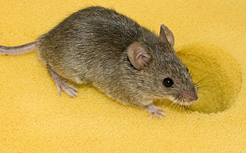

Nagłówek
Aby zapewnić zgodność z przepisami dotyczącymi ochrony danych, prosimy o poświęcenie chwili na zapoznanie się z najważniejszymi punktami Polityki prywatności Google.
Mysz to rodzaj ssaka z podrodziny myszy w rodzinie myszowatych.Na załączonym obrazku mysz leśna:

Rodzaj obejmuje gatunki występujące głównie w Afryce, Azji i Europie. Mysz domowa jest jedynym gatunkiem tego rodzaju, który zamieszkuje obie Ameryki i Australię.